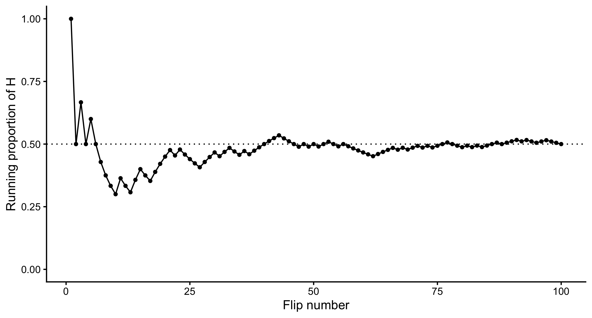
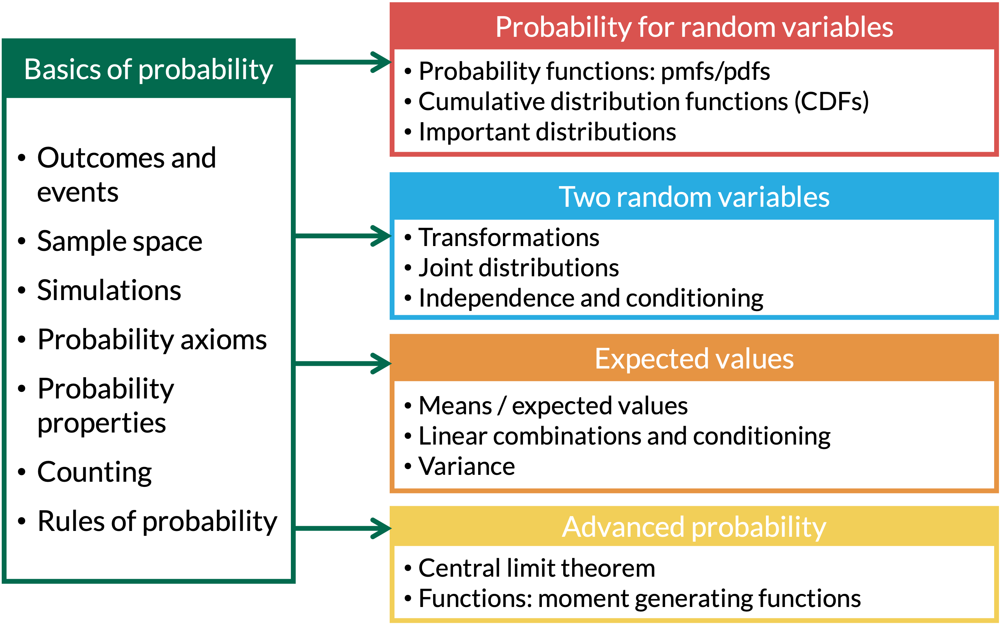
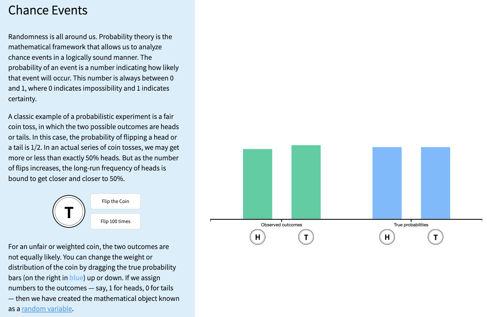
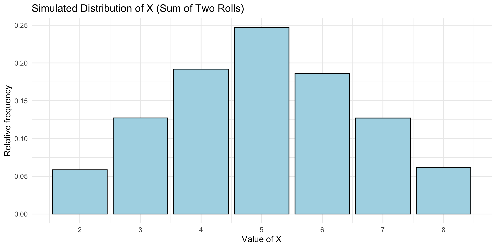
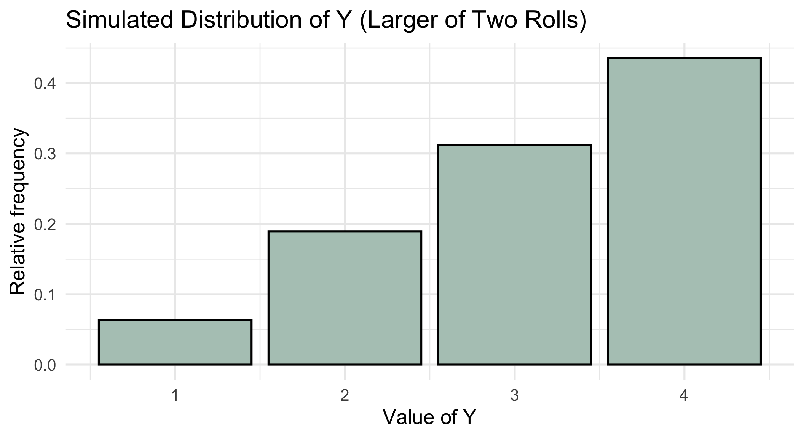
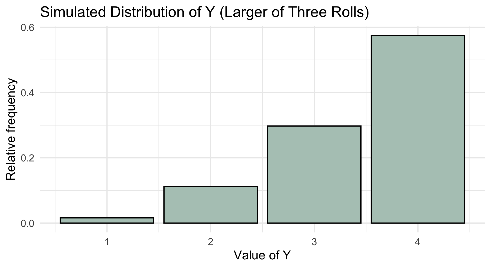

2026-09-30

Definition: Outcome
The possible results in a random phenomenon.
Definition: Sample Space
The sample space \(S\) is the set of all outcomes
Definition: Event
An event is a collection of some outcomes. An event can include multiple outcomes or no outcomes (a subset of the sample space).
When thinking about events, think about outcomes that you might be asking the probability of. For example, what is the probability that you get a heads or a tails in one flip? (Answer: 1)
Definition: Random Variable
For a given sample space \(S\), a random variable (r.v.) is a function whose domain is \(S\) and whose range is the set of real numbers \(\mathbb{R}\). A random variable assigns a real number to each outcome in the sample space.
A random variable’s value is completely determined by the outcome \(\omega\), where \(\omega \in S\)
A random variable is a function from the sample space (with outcomes \(\omega\)) to the set of real numbers
Thus, we can take our sample space (all outcomes) and make functional transformations to it
Do you remember our coin example from Lesson 1? We tossed one or two coins.
We make the random variable a function of the sample space.
There are two types of random variables:
Discrete random variables (RVs): the set of possible values is either finite or can be put into a countably infinite list
You could theoretically list the specific possible outcomes that the variable can take
If you sum the rolls of three dice, you must get a whole number. For example, you can’t get any number between 3 and 4.
Continuous random variables (RVs): take on values from continuous intervals, or unions of continuous intervals
Variable takes on a range of values, but there are infinitely possible values within the range
If you keep track of the time you sleep, you can sleep for 8 hours or 7.9 hours or 7.99 hours or 7.999 hours …
A probability model for a random phenomenon includes a sample space, events, random variables, and a probability measure.
Simulation
Simulation involves using a probability model to artificially recreate a random phenomenon, many times, usually using a computer.
We simulate outcomes and values of random variables according to the model’s assumptions.
In Lesson 1, we flipped a coin 100 times and recorded the proportion of heads.


Example: Simulating Two Rolls of a Fair Four-Sided Die
We’re going to roll two four-sided dice. Let \(X\) be the sum of two rolls, and \(Y\) be the larger of the two rolls. How would we simulate \(X\) and \(Y\) separately?
Let’s build up some coding tools to do this!
We can also use R to sample from the box or spinner
The sample() function is a powerful tool for simulating draws from a box model.
For example, we can simulate a coin flip
x?size?sample() draws at random from the values in x. c("H", "T") puts “H” and “T” together as a box of two tickets, and size = 1 draws one ticket.
[1] "T"
size to be larger than 1 to simulate multiple draws at oncesize = 5 draws 5 tickets. replace = TRUE puts each ticket back before the next draw, so “H” and “T” can come up again, just like flipping the same coin 5 times.
[1] "T" "T" "T" "H" "T"replace = TRUE, both rolls can show the same number.
[1] 3 3
replace = FALSE?Example: Simulating Two Rolls of a Fair Four-Sided Die
We’re going to roll two four-sided dice. Let \(X\) be the sum of two rolls, and \(Y\) be the larger of the two rolls. How would we simulate \(X\) and \(Y\) separately?
sim numbers each simulation (each pair of rolls), and die says which die was rolledexpand_grid() makes every combination of sim and die, and n() is the number of rows
reps, so it is easy to change later.
|> passes this table to the next line.
mutate() adds a new column called roll. n() is the number of rows (10), so we get one random roll of a four-sided die for every row.
sim) takes up two rows: one for die 1 and one for die 2
sim = 1 are the first pair of rolls
group_by(sim) tells R to treat each simulation separatelysummarise() collapses each group into one rowX.
# A tibble: 5 × 2
sim X
<int> <int>
1 1 5
2 2 3
3 3 4
4 4 5
5 5 5
X_sims.

summarise() can calculate several summaries at once:
X.
summarise() collapses the whole table into one row. Each name inside it becomes a column.
X.
X == 5 and X < 3 are TRUE or FALSE for each simulation, so their mean is the proportion of simulations where the event happened.
# A tibble: 1 × 4
average std_dev prob_5 prob_less_3
<dbl> <dbl> <dbl> <dbl>
1 5.00 1.57 0.247 0.0585
Probabilities (relative frequencies) are the proportion of simulations where the event occurs:
X == 5 is TRUE or FALSE for each simulationTRUE as 1 and FALSE as 0, so mean(X == 5) is the number of times the event occurs divided by the total number of simulations (reps)Define the probability space and related random variables and events, including assumptions.
Run the simulation to generate outcomes according to the assumptions.
Analyze the output using plots and summary statistics like relative frequencies and averages.
Investigate how results change when assumptions or parameters of the model are altered.
Example: Simulating Two Rolls of a Fair Four-Sided Die
We’re going to roll two four-sided dice. Let \(X\) be the sum of two rolls, and \(Y\) be the larger of the two rolls. How would we simulate \(X\) and \(Y\) separately?
Define the probability space and related random variables and events, including assumptions.
\[\begin{aligned} S = \{ &(1,1), (1,2), (1,3), (1,4), (2,1), (2,2), (2,3), (2,4),\\ & (3,1), (3,2), (3,3), (3,4), (4,1), (4,2), (4,3), (4,4)\} \end{aligned}\]
Run the simulation to generate outcomes according to the assumptions.
max() of each simulation instead of the sum()n_dice, so it is easy to change laterX: one row per roll, with a random roll of a four-sided die in each row.
X: max() keeps the larger roll in each simulation instead of adding them up.
Analyze the output using plots and summary statistics like relative frequencies and averages.
Y_sims with Y on the x-axis. after_stat(prop) makes each bar’s height a proportion (relative frequency) instead of a count. Layers are added with +.
Y, with a black outline.

If the problem asked us for something else, we could compute it:
Y into one row of summaries.
Y.
Y = 1 and where Y > 3. These approximate the probabilities.
# A tibble: 1 × 3
average prob_1 prob_over_3
<dbl> <dbl> <dbl>
1 3.12 0.0634 0.436Investigate how results change when assumptions or parameters of the model are altered.
What if we rolled three dice instead of two?
n_dice! Everything else stays the same (the changed line is highlighted)n_dice instead of typing 2, each simulation now gets three rows automatically.
Investigate how results change when assumptions or parameters of the model are altered.
filter() keeps only the rows that match a condition. Here, that is the three rolls from simulation 1.
# A tibble: 3 × 3
sim die roll
<int> <int> <int>
1 1 1 2
2 1 2 4
3 1 3 2
Y_sims with Y on the x-axis. after_stat(prop) makes each bar’s height a proportion (relative frequency) instead of a count. Layers are added with +.
Y, with a black outline.

Lesson 2 Slides